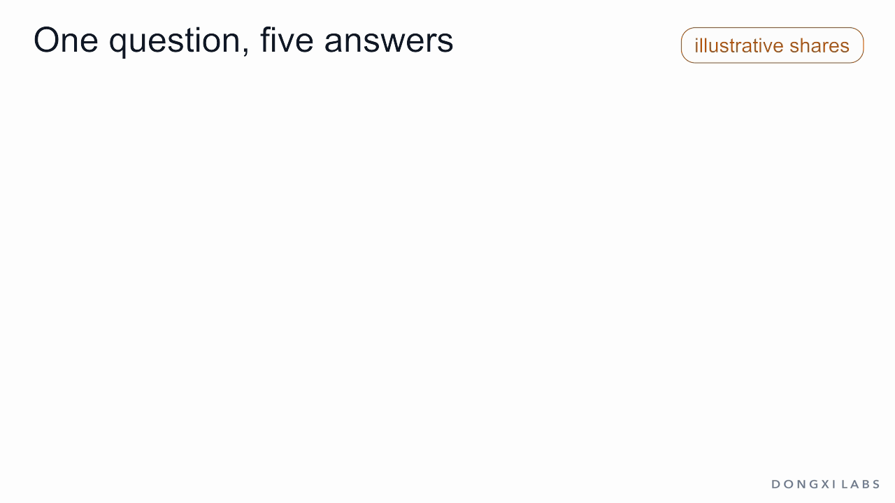
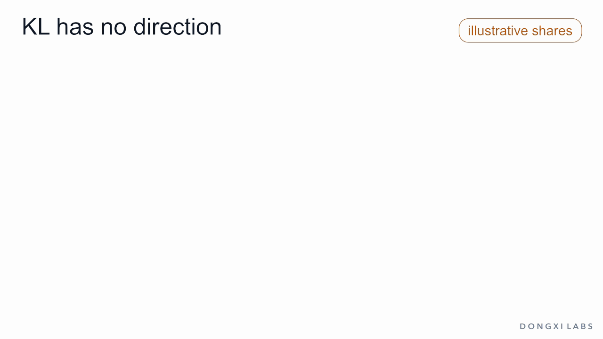
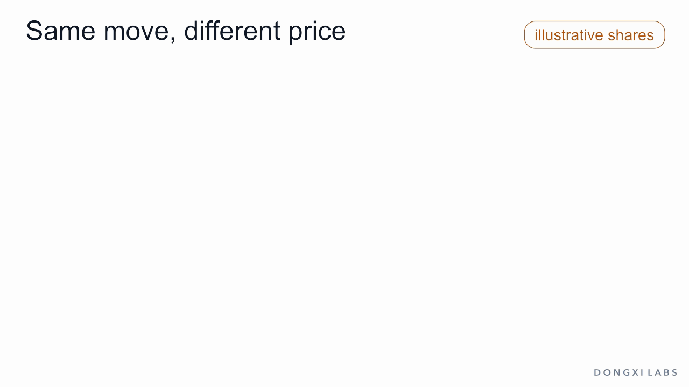
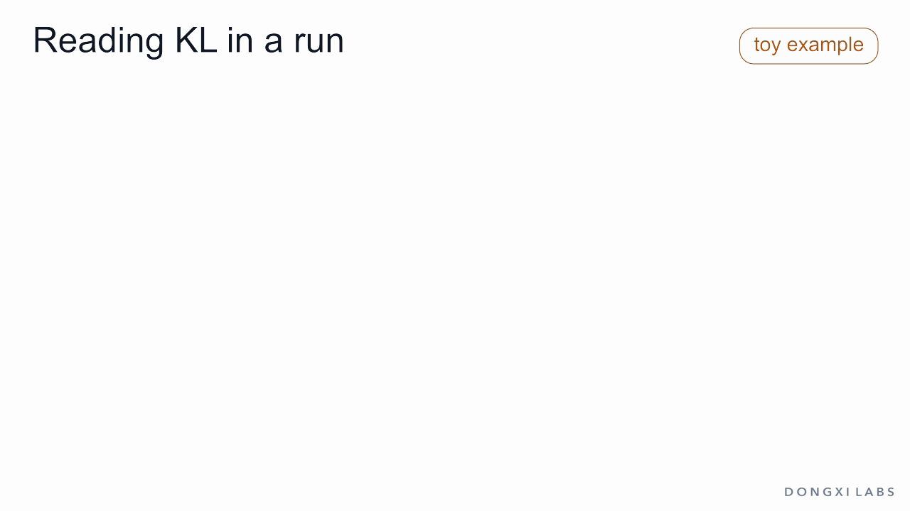

The reference's five shares, then 0.10 moves from the vague answer to the best answer. Illustrative probabilities.

A ratio dial and the log curve: 1 goes to 0, doubling and halving land at +0.693 and −0.693, and the curve falls without limit near 0.

Ratio, log, weight by the new model, add: −0.086 + 0.133 = 0.047. The formula assembles symbol by symbol above the columns.

Replies arrive one at a time and each adds its log-ratio to the evidence. At KL 0.047 the total reaches 3.0, or 20-to-1 odds, after about 64 replies on average.

Gains add to 0; every term is at least its gain, so the terms add to at least 0. A drop to 0.01 has log-ratio −3.689, but its term is only −0.037.

Toward and away from the best answer both cost KL (0.047 and 0.076). The reward separates them (0.638 and 0.209), and β sets how far the best answer's share rises.

The same 0.10 moved to a common answer and to a rare one: share moved 0.10 both times, KL 0.031 and 0.233.

The two orders of KL: 0.047 and 0.042 for the small move; dropping an answer costs 0.102 one way and is infinite the other.

The new model writes replies, each drops its log-ratio, and the running average settles near 0.047. One simulated run.

A reply's log-ratio splits over its tokens: 0.223 + 0 + 0.182 = 0.405, and the two places PPO and GRPO put it. Illustrative probabilities.

As KL grows, the reward keeps rising while gold peaks at 1.10 at KL 0.81 and falls. Toy example; each point is the best compromise at a smaller β.

At the best compromise every log-ratio equals the reward minus 0.808. In a comparison the constant cancels: 0.731 either way.